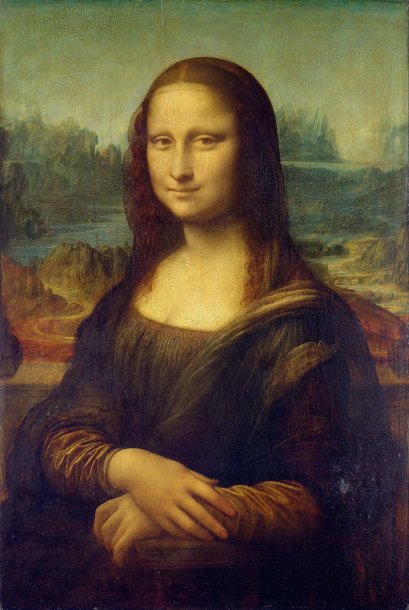
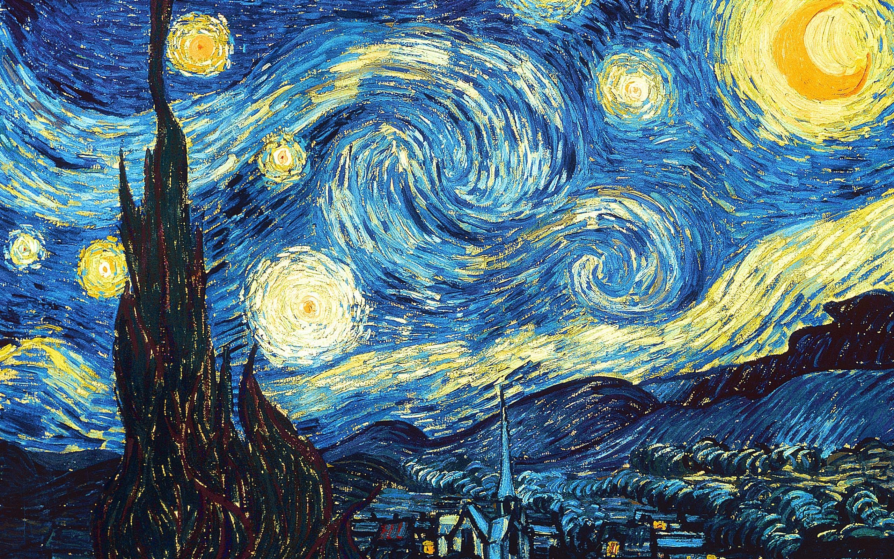

Festészet:A festőművészet a képzőművészet egy ága, amely síkbeli színekből, vonalakból állít elő művészi kompozíciót. Terméke a kép vagy festmény. Ez anyagától függően lehet olajfestmény, tempera, akvarell, gouache, freskó, mozaik, üvegfestmény, tűzzománc, textil stb. E technikák közös jellemzője, hogy színes anyagokat festéket, üvegdarabokat, zománcot, fonalakat stb. visznek fel, helyeznek el valamilyen hordozó alapra.
Híres Festők:

-Leonardo da Vinci: Olasz festő, tudós, matematikus, hadmérnök, feltaláló, anatómus, szobrász, építész, zeneszerző, költő és író egy személyben.
Élete első festménye is ekkortájt készült el. Ehhez Verocchio Krisztus keresztelése című alkotása jelentette az inspirációt,
amelyről az angyalfigurát és a kép hátterét értelmezte újra.
Mindössze 26 éves volt, amikor 1478-ban felkérték a firenzei Signoria San Bernardo kápolna oltárképének megfestésére.
Milánóban töltött évei alatt dolgozott az Utolsó vacsorán is, amelyet 1498-ban fejezett be. Az egyedülálló alkotás a kompozíció,
a színhasználat, a megvilágítás, valamint az alakok ábrázolása miatt a nyugati világ egyik legkiemelkedőbb freskója lett.
A következő állomás Firenze volt. 1502-ben Leonardo Cesare Borgia szolgálatába állt, még a romagnai hadjáratba is elkísérte.
Nem véletlen, hogy da Vinci művészeti palettája ebben az időszakban hadigépezet vázlatokkal és erődítmények terveivel bővült.
Szintén erre az időszakra datálható az ikonikus Mona Lisa megfestése is, amely három évet vett igénybe; igaz,
művészettörténészek szerint ebből kettő a rejtélyes mosoly megfestésével telt.
1506-ban visszahívták Milánóba, ahol megfestette a Sziklás Madonna egyik változatát, vízvezetéket és új kormányzói palotát is tervezett.
1513-ban, X. Leó pápa úgy érezte, nem elég neki Raffaello és Michelangelo jelenléte.
Azt szerette volna, ha Leonardo is neki dolgozik, így hát da Vinci és hűséges tanítványa, Francesco Melzi Rómába költözött.
Amikor a Milánót meghódító francia uralkodó, I. Ferenc meghívta magához Leonardót 1517-ben, da Vinci nem sokat morfondírozott: csomagolt
, és a Franciaországba utazott, hogy a király első számú festője legyen.
Leghíresebb műve:
1503–1519 között készült leghíresebb festménye, amely a párizsi Louvre-ban van kiállítva.
Leghiressebb műve:

-Pablo Picasso: Picasso spanyol származású képzőművész és író. A híres Párizsi iskola jeles képviselője és a 20. századi avantgárd egyik legjelentősebb alakja.
Picasso igazán különleges volt mivel pályafutása alatt, több művészeti stílusban is készített képeket. Az egyes korszakok a művész életének érzelmi eseményeit jellemezték.
A festő nagyon termékeny művész volt, 78 év munkássága alatt több, mint 13 000 festményt, 100 000 nyomatot, valamint metszetet és 34 000 illusztrációt készített.
Leghíresebb műve:
Az Öreg gitáros Pablo Picasso olajfestménye, amelyet 1903 végén és 1904 elején készített. Egy idős zenészt ábrázol, egy szálkás férfit, aki cérnaruházattal rendelkezik, aki a gitárja fölé görnyedve játszik a spanyolországi Barcelona utcáin.
Leghiressebb műve:

-Vincent van Gogh : Holland festőművész, a posztimpresszionizmus egyik legnagyobb alakja. Olyan csendélet képeket festett, amik igazán forma bontónak számítottak az ő idejében.
1887-ben költözött Arlesba és a dél-francia színek pompája teljesen magával ragadta a művészt és itt alkotta meg mai napig is híres remekműveit.
Érdekesség, hogy előszeretettel festette meg az éjszakát a szabad ég alatt, ehhez állítólag olyan kalapot viselt, amihez gyertyákat erősített, hogy a sötétben is felismerje a festék színeit.
Sorsának talán legtragikusabb eleme, hogy a remekművekből egész életében csak egyet tudott eladni.
Leghíresebb műve:
Egy éjszakai tájkép csillagos égbolttal, ciprusfával, egy falu látképével, a háttérben hegyekkel. A mű Dél-Franciaországban, Saint-Rémy-de-Provence községben, Saint-Paul-de-Mausole kolostor épületében működő elmegyógyintézetben készült 1889 júniusában.Leghiressebb műve:
-Claude Oscar Monet: Francia impresszionista festő. Festményei a napfényes színektől és a remegő atmoszférától kelnek életre. Az ember ábrázolása a műveiben abszolút másodlagos elem volt. A festményein sosem a tárgyakon van a hangsúly sokkal inkább a színek elképesztő pompáján. Sokan úgy tarják, hogy Monet munkássága fektette le a későbbi absztrakt stílus alapköveit.
Leghíresebb műve:
Az Impresszió, napkelte az "Impresszionisták Kiállítása" néven ismertté kiállításon mutatták be Párizsban 1874 áprilisában. A festményt az impresszionista mozgalom nevének ihletőjének tulajdonítják.